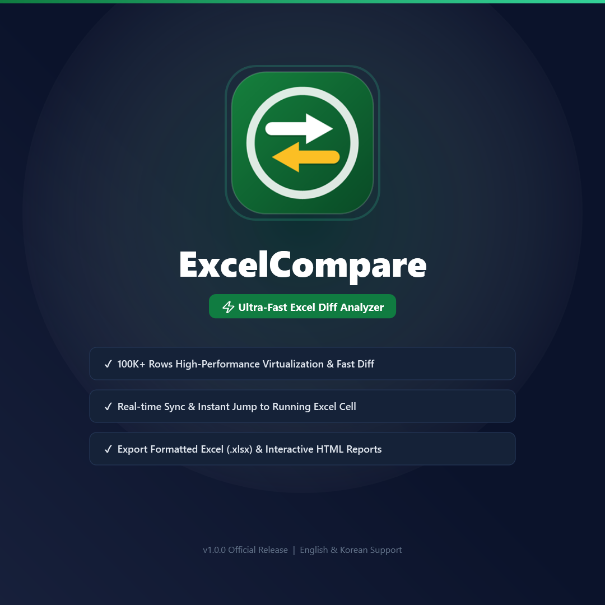

코딩 없이 선만 잇는 화면 자동화(AutoFlow RPA), 0.1초 실시간 AI 파일 분류(FileFlow), 10만 행 대용량 초고속 엑셀 비교(ExcelCompare), 마우스 제스처 창 제어와 화면 오버레이 핀까지.
비싼 유료 소프트웨어 없이, 데스크톱 작업 시간을 90% 줄여주는 검증된 윈도우 필수 유틸리티 5종을 누구나 평생 무료로 사용하세요.
각각의 도구는 독립적으로도 강력하며, 함께 사용할 때 상상 이상의 업무 시너지를 발휘합니다.
 AutoFlow RPA
(오토플로우 RPA)
AutoFlow RPA
(오토플로우 RPA)
"선만 연결하면 완성되는 노코드 화면 자동화"
복잡한 코딩(Script) 없이 화면 이미지를 마우스로 지정하고 선만 연결하면 알아서 동작하는 비주얼 순서도 기반 업무 자동화 도구입니다. ERP 자동 로그인, 엑셀/웹 반복 클릭, 화면 감지 클릭을 손쉽게 구현합니다.
"0.1초 실시간 감시 & Explainable AI 기반 스마트 파일 정리"
다운로드 폴더나 업무 드라이브에 신규 파일이 들어오는 즉시 0.1초 만에 감지하여, 나이브 베이즈 머신러닝 및 키워드 규칙으로 최적의 프로젝트 하위 폴더에 자동 분류해 주는 차세대 파일 허브 시스템입니다.
"10만 행 대용량 시트 실시간 양면 비교 & 분석 솔루션"
두 엑셀 파일의 시트별 데이터 차이점(추가/삭제/수정)을 0.1초 만에 색상별로 정확하게 분석합니다. 듀얼 그리드 동기화 스크롤, 차이점만 모아보기 필터, 클릭 즉시 실제 엑셀 원본 셀로 이동하는 연동 기능을 제공합니다.

"마우스 우클릭 드래그 하나로 윈도우 창과 단축키를 광속 제어"
마우스를 살짝 긋는 동작만으로 창 닫기, 최소화, 최대화, 가상 데스크톱 전환, 웹 브라우저 탭 이동 등 자주 쓰는 동작을 키보드에 손 올릴 필요 없이 즉각 실행합니다.
"작업 화면 위에 항상 떠 있는 투명 이미지 핀 & 참조 도구"
디자인 시안, 참고 문서, 코드 스니펫, 수식 이미지를 화면 최상단(Always-on-Top)에 고정해두고 투명도를 조절하며 작업할 수 있는 디자이너/개발자/사무직 필수 유틸리티입니다. (Windows 및 macOS 동시 지원)
FlowSuite의 유틸리티들은 당신의 데스크톱을 가장 완벽한 스마트 생산성 워크스테이션으로 탈바꿈시킵니다.
마우스 제스처로 작업 창들을 순식간에 정렬하고 필요한 툴을 바로 띄웁니다.
필요한 가이드 시안이나 데이터를 화면 위에 투명하게 띄워두고 작업합니다.
손이 많이 가는 반복 클릭과 시스템 입력을 노코드 순서도로 대신 처리합니다.
완성된 결과물과 다운로드 파일들을 AI가 알아서 폴더별로 0.1초 만에 정리합니다.
대용량 엑셀 시트의 변경점을 0.1초 만에 추적하고 원본 셀과 실시간 검증합니다.
별도 회원가입 없이 닉네임과 내용만 적으시면 즉시 등록되며, 개발자에게 실시간으로 전달됩니다.
버그 제보, 추가되었으면 하는 기능, 사용 후기나 응원 한 줄 모두 환영합니다!